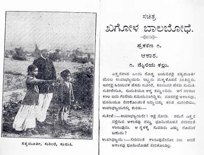

ಖಗೋಳ ಬಾಲಬೋಧೆ
‘ಖಗೋಳ ಬಾಲಬೋಧೆ-1ನೆಯ ಭಾಗ’ ಪುಸ್ತಕವನ್ನು ಬರೆದವರು ಎಚ್.ಜಿ. ಲಿಂಗಣ್ಣ. ಈ ಕೃತಿಯ ಮೊದಲ ಮುದ್ರಣ 1928ರಲ್ಲಿ ಆಗಿದೆ. ಬೆಂಗಳೂರು ಸಿಟಿಯ ಬಿ. ಶ್ರೀನಿವಾಸ ಅಯ್ಯಂಗಾರ್ ಅವರು ಇದನ್ನು ಮುದ್ರಿಸಿ ಮೈಸೂರಿನ ಎಚ್.ಜಿ. ಲಿಂಗಣ್ಣ ಅಂಡ್ ಸನ್ ಇದನ್ನು ಪ್ರಕಾಶಿಸಿರುತ್ತಾರೆ. 1000 ಪ್ರತಿಗಳು ಮುದ್ರಣಗೊಂಡ ಈ ಕೃತಿಯ ಒಳಪುಟದಲ್ಲಿ ಸಚಿತ್ರ ಬಾಲ ಬೋಧೆಯ 2-3ನೆಯ ಭಾಗಗಳು ಮುದ್ರಣದಲ್ಲಿದೆ ಎನ್ನುವ ಜಾಹೀರಾತು ಇದೆ. ಆದರೆ ಆ ಪುಸ್ತಕಗಳು ಪ್ರಕಟಗೊಂಡಿರುವ ಬಗ್ಗೆ ಕನ್ನಡದ ಯಾವ ಗ್ರಂಥಕೋಶಗಳಲ್ಲಿಯೂ ಉಲ್ಲೇಖವಿಲ್ಲ. ಅಷ್ಟಮ ಡೆಮಿ ಆಕಾರದ 12+110 ಪುಟಗಳ ಈ ಪುಸ್ತಕದ ಬೆಲೆ 8 ಆಣೆ. ಇದು 5, 6 ಮತ್ತು 7ನೇ ತರಗತಿಗಳ ವಿದ್ಯಾರ್ಥಿಗಳ ಕುತೂಹಲವನ್ನು ತಣಿಸುವುದಕ್ಕಾಗಿ ಬರೆದ ಪುಸ್ತಕ ಎಂದು ಸ್ವತಃ ಲೇಖಕರು ‘ಪೀಠಿಕೆ’ಯಲ್ಲಿ ಹೇಳಿದ್ದಾರೆ.
ಸುಶೀಲೆ ಎನ್ನುವ ವಿದ್ಯಾರ್ಥಿನಿ ಹಾಗೂ ಸುಮತಿ ಎನ್ನುವ ವಿದ್ಯಾರ್ಥಿ– ಇವರು ಕೇಳುವ ಪ್ರಶ್ನೆಗಳಿಗೆ ಸತ್ಯಮೂರ್ತಿ ಎನ್ನುವ ಉಪಾಧ್ಯಾಯರು ಉತ್ತರ ನೀಡಿ ಸರಳ ನಿದರ್ಶನಗಳೊಂದಿಗೆ ವಿದ್ಯಾರ್ಥಿಗಳ ಸಂಶಯ ಕಳೆದು ಸ್ಪಷ್ಟಪಡಿಸುವ ಚಿಂತನೆಗಳ ರೀತಿಯ ತಂತ್ರ ಇಲ್ಲಿದೆ. ಇಲ್ಲಿ ಉಪಾಧ್ಯಾಯ, ವಿದ್ಯಾರ್ಥಿನಿ ಹಾಗೂ ವಿದ್ಯಾರ್ಥಿಯರ ಹೆಸರು ಕೂಡ ರೂಪಕಾತ್ಮಕವಾಗಿದೆ. ಭಾರತೀಯರು ಹಿಂದಿನ ಕಾಲದಿಂದಲೂ ಖಗೋಳ ವಿಜ್ಞಾನದಲ್ಲಿ ಹೆಚ್ಚಿನ ತಿಳಿವಳಿಕೆಯುಳ್ಳವರಾಗಿದ್ದರು.ಕನ್ನಡಿಗರು ಇದಕ್ಕೆ ಹೊರತಲ್ಲ. ಅಷ್ಟೇ ಅಲ್ಲ, ಕನ್ನಡದಲ್ಲಿ ಖಗೋಳ ವಿಜ್ಞಾನಕ್ಕೆ ಸಂಬಂಧಿಸಿದಂತೆ 19ನೇ ಶತಮಾನದಲ್ಲಿಯೇ 20ಕ್ಕೂ ಹೆಚ್ಚು ಕೃತಿಗಳು ಪ್ರಕಟಗೊಂಡಿವೆ. ಇವುಗಳಲ್ಲಿ 1874ರಲ್ಲಿ ಚಿಂತಾಮಣಿ ರಘೂನಾಥಾಚಾರಿ ಅವರು ‘ಶುಕ್ರಗ್ರಸ್ತ ಸೂರ್ಯಗ್ರಹಣ’ ಎನ್ನುವ ಕೃತಿಯನ್ನು ಕನ್ನಡದಲ್ಲಿ ರಚಿಸಿದ್ದು ಅದು ಪ್ರಕಟಗೊಂಡಿದೆ.
ಇದರ ಇಂಗ್ಲಿಷ್ ಹಾಗೂ ಉರ್ದು ಅವತರಣಿಕೆಗಳನ್ನು ಕೂಡ ಸ್ವತಃ ರಘೂನಾಥಾಚಾರಿಯವರೇ ಹೊರತಂದಿದ್ದರು. ಸುಮಾರು 1850ರಲ್ಲಿ ಸಿದ್ಧಾಂತಿ ಪುಸ್ತಕಂ ತಿರುಮಲಾಚಾರ್ಯರೆನ್ನುವ ಸಂಸ್ಕೃತ ವಿದ್ವಾಂಸರೊಂದಿಗೆ ಇಂಗ್ಲಿಷ್ ಜ್ಞಾನವನ್ನು ಚೆನ್ನಾಗಿ ಪಡೆದ ಯಾರೋ ಒಬ್ಬರು (ಹೆಸರು ಗೊತ್ತಾಗಿಲ್ಲ) ‘ಜ್ಯೋತಿಸ್ಸಿದ್ಧಾಂತ ಸಂಗ್ರಹ’ ಎನ್ನುವ ಉಪಯುಕ್ತ ಮಾಹಿತಿ, ವಿಶ್ಲೇಷಣೆ ಹಾಗೂ ಪ್ರಯೋಗದ ಪ್ರತಿಫಲಗಳನ್ನುಳ್ಳ ಸೊಗಸಾದ ಕೃತಿಯನ್ನು ರಚಿಸಿರುತ್ತಾರೆ. ಈ ನಿಟ್ಟಿನಲ್ಲಿ ತಿರುಮಲರಾಯರ ‘ಜ್ಯೋತಿಶ್ಶಾಸ್ತ್ರ’ (1931) (ಪ್ರಜಾವಾಣಿ 23 ಜೂನ್ 2013) ಕೃತಿಯನ್ನೂ ಗಮನಿಸಬಹುದು. ಹೀಗಾಗಿ ಕನ್ನಡದಲ್ಲಿ ಖಗೋಳ ವಿಜ್ಞಾನದ ಪುಸ್ತಕಗಳಿಗೆ ಒಂದು ಶ್ರೀಮಂತ ಪರಂಪರೆ ಇದೆ. ಈ ಪರಂಪರೆಗೆ ‘ಸಚಿತ್ರ ಖಗೋಳ ಬಾಲಬೋಧೆ’ ಒಂದು ಒಳ್ಳೆಯ ಸೇರ್ಪಡೆ.
ಪೀಠಿಕೆಯಲ್ಲಿ ಲೇಖಕರು– ‘‘ಭಾರತೀಯರಲ್ಲಿ ಅನೇಕ ಸ್ತ್ರೀಪುರುಷರು ಸೃಷ್ಟಿ ವಿಷಯಕವಾದ ಶಾಸ್ತರದಲ್ಲಿ ಸಾಮಾನ್ಯ ತಿಳಿವಳಿಕೆಯನ್ನೂ ಪಡೆಯದಿರುವರು. ಇವರೆ ಹೀಗಿರುವಲ್ಲಿ ಚಿಕ್ಕಮಕ್ಕಳು ಹೇಗೆ ತಾನೆ ಸೃಷ್ಟಿ ವಿಷಯಕವಾದ ಶಾಸ್ತ್ರವನ್ನರಿತಾರು! ಆರು ವರ್ಷಗಳ ವಯಸ್ಸಿಗೆ ಮೇಲ್ಪಟ್ಟ ಮಕ್ಕಳು ಹೊಸ ವಿಷಯಗಳನ್ನು ತಿಳಿದುಕೊಳ್ಳಬೇಕೆಂಬ ಕುತೂಹಲವನ್ನುಂಟುಮಾಡುವ ಆಶ್ಚರ್ಯಪ್ರಪಂಚದಲ್ಲಿ ಬೆಳೆಯುತ್ತಿರುವರು. ಈ ಮಕ್ಕಳು ಯಾವಾಗಲೂ ಸೃಷ್ಟಿ ವಿಷಯವನ್ನು ಕುರಿತು ಪ್ರಶ್ನೆಗಳನ್ನು ಕೇಳುತ್ತಲೂ, ಅವುಗಳಿಗೆ ಸಮಂಜಸವಾದ ಉತ್ತರಗಳನ್ನು ನಿರೀಕ್ಷಿಸುತ್ತಲೂ ಇರುವರು.
ಈ ಪ್ರಶ್ನೆಗಳಿಗೆ ತಕ್ಕ ಉತ್ತರಗಳನ್ನು ಕೊಡಲು ಅಶಕ್ತರಾದ ಹಿರಿಯರು ಒಂದಲ್ಲ ಒಂದು ರೀತಿಯಲ್ಲಿ ಅಸಡ್ಡೆಯನ್ನು ತೋರಿಸುವರು; ಇಲ್ಲವೆ ಅಸಂಬದ್ಧವಾದ ಉತ್ತರಗಳನ್ನು ಕೊಡುವರು. ಆದ್ದರಿಂದ ನಿಜವನ್ನರಿಯಲು ಅವಕಾಶವಿಲ್ಲದ ಈ ಮಕ್ಕಳು ಮೌಢ್ಯದಲ್ಲಿ ಬೆಳೆಯುವರು. ಇವರೇ ಮುಂದಕ್ಕೆ ಮೇಲೆ ಹೇಳಿದ ಸ್ತ್ರೀಪುರುಷರಂತಾಗುವರು. ಆದರೆ ಜಾಣರಾದವರು ನಿಜಸ್ಥಿತಿಯನ್ನರಿಯಲು ನಂಬಿಕೆಗರ್ಹವಾದ ಸಮಾಧಾನಗಳನ್ನು ಕೇಳುವುದಲ್ಲದೆ ಶಾಸ್ತ್ರಾಧಾರಗಳನ್ನೂ ಅಪೇಕ್ಷಿಸುವರು. ಈ ಎರಡು ವಿಧವಾದ ಅವಶ್ಯಕತೆಗಳನ್ನು ಎದುರುಗೊಳ್ಳಬೇಕೆಂಬುದೇ ನನ್ನ ಪ್ರಯತ್ನದ ಅಸ್ತಿಭಾರವಾಗಿರುವುದು.
ಖಗೋಳಶಾಸ್ತ್ರದಲ್ಲಿ ಪ್ರಸಿದ್ಧಿಯನ್ನು ಪಡೆದ ಮಹಾಪುರುಷರು ಬರೆದಿರುವ ಗ್ರಂಥಗಳಲ್ಲಿ ಇಂದಿನವರೆಗಿನ ವಿಷಯಗಳನ್ನು ಸಂಗ್ರಹಿಸಿ, ಎಲ್ಲರಿಗೂ ತಿಳಿಯುವಂತೆ ಸಲ್ಲಾಪಬೋಧೆಯ ರೂಪದಲ್ಲಿ ಬಹು ಸುಲಭವಾದ ಪಾಠಗಳನ್ನು ಈ ಪುಸ್ತಕದಲ್ಲಿ ಕೊಟ್ಟಿರುವೆನಲ್ಲದೆ, ಇವುಗಳನ್ನು ಸೂಕ್ತವಾದ ಚಿತ್ರಗಳಿಂದ ಹೆಚ್ಚು ರಂಜನೆಗೊಳಿಸಿರುವೆನು’’. ಹೀಗೆ ಈ ಪುಸ್ತಕದ ಸ್ವರೂಪದ ಬಗ್ಗೆ ಹೇಳಿ ಕೃತಿರಚನೆಗೆ ಕಾರಣಗಳನ್ನು ನೀಡಿರುತ್ತಾರೆ. ಈ ಗ್ರಂಥವನ್ನು ರಚಿಸುವಾಗ ತಮಗೆ ನೆರವು ನೀಡಿದ ‘ದೃಗ್ಸಿದ್ಧಾಂತದರ್ಪಣ’ದ ಕರ್ತೃ ಸಿ. ಚಿಕ್ಕಣ್ಣ ಹಾಗೂ ಸೆಂಟ್ರಲ್ ಕಾಲೇಜಿನಲ್ಲಿ ಗಣಿತಶಾಸ್ತ್ರ ಪಂಡಿತರಾಗಿದ್ದ ಎಚ್.ಆರ್. ಕೃಷ್ಣಮೂರ್ತಿರಾಯರನ್ನು ಸ್ಮರಿಸಿಕೊಂಡಿರುತ್ತಾರೆ.
ಈ ಪುಸ್ತಕದಲ್ಲಿ ಆಕಾಶ, ಭೂಮಿ ಹಾಗೂ ಸೂರ್ಯ ಎನ್ನುವ ಮೂರು ಪ್ರಕರಣಗಳಿವೆ. ‘ಆಕಾಶ’ ಪ್ರಕರಣದಲ್ಲಿ ಮೈಲಿಯ ಕಲ್ಲು, ಆಕಾಶಕ್ಕೆ ಕೊನೆ ಮೊದಲಿಲ್ಲ, ದಿಕ್ಕುಗಳು ಹಾಗೂ ಆಕಾಶದ ಅವಶ್ಯಕತೆ ಎನ್ನುವ ನಾಲ್ಕು ಅಧ್ಯಾಯಗಳಿವೆ. ‘ಭೂಮಿ’ ಪ್ರಕರಣದಲ್ಲಿ ಭೂಮಿಯ ವಿಸ್ತಾರ, ಭೂಮಿಯ ಆಕಾರ, ಭೂಮಿಯ ಗಾತ್ರ, ಚಲಿಸುವುದು ಯಾವುದು? ಭೂಮಿಯು ತನ್ನ ಅಕ್ಷದ ಮೇಲೆ ಸುತ್ತುವುದು, ಭ್ರಾಂತಿಯೋ-ನಿಜವೋ, ಹಗಲು ರಾತ್ರಿ, ಭೂಮಿಯ ಮೇಲಿರುವ ಚರಾಚರ ವಸ್ತುಗಳ ಸ್ಥಿತಿ ಹಾಗೂ ಭೂಮಿ ಆಕಾಶ ಎಂಬ ಒಂಬತ್ತು ಅಧ್ಯಾಯಗಳಿವೆ. ‘ಸೂರ್ಯ’ ಪ್ರಕರಣದಲ್ಲಿ ಸೂರ್ಯನ ಕಡೆ ಯಾರೂ ನೋಡಲಾರರು, ಸೂರ್ಯನ ಗಾತ್ರ, ಬೆಳಕಿನ ಮೂಲ, ಶಾಖದ ಮೂಲ, ಸೂರ್ಯನ ಶಾಖದ ವ್ಯಾಪನೆ, ಎಂದಿಗೂ ಆರದಿರುವ ಒಂದು ದೀಪ, ಸೂರ್ಯನು ಸಮೀಪದಲ್ಲಿರುವ ಒಂದು ನಕ್ಷತ್ರ ಹಾಗೂ ಸೂರ್ಯನ ಸುತ್ತಲೂ ಭೂಮಿಯು ತಿರುಗುವುದು ಎನ್ನುವ ಎಂಟು ಅಧ್ಯಾಯಗಳಿವೆ.
ಒಟ್ಟು ಇಪ್ಪತ್ತೊಂದು ಅಧ್ಯಾಯಗಳಲ್ಲಿ ಹದಿಹರೆಯದ ವಿದ್ಯಾರ್ಥಿಗಳಿಗೆ ಖಗೋಳ ಶಾಸ್ತ್ರದ ಮೂರು ಮೂಲದ್ರವ್ಯಗಳಾದ ಭೂಮಿ, ಆಕಾಶ, ಸೂರ್ಯರನ್ನು ಕುರಿತ ಒಂದು ಸ್ಥೂಲವಾದ ಸ್ಪಷ್ಟ ತಿಳಿವಳಿಕೆಯನ್ನು ಲೇಖಕರು ಮೂಡಿಸುತ್ತಾರೆ. ದಿನನಿತ್ಯದ ಜೀವನದ ವ್ಯವಹಾರದ ಅತ್ಯಂತ ಪರಿಚಿತ ವಸ್ತುಗಳ ಚಿತ್ರಗಳ ನಿದರ್ಶನಗಳ ಮೂಲಕ ಅತ್ಯಂತ ಜಟಿಲವಾದ ವೈಜ್ಞಾನಿಕ ಪರಿಕಲ್ಪನೆಗಳನ್ನು ಲೇಖಕರು ಸರಳವಾಗಿ ಮನೋಜ್ಞವಾಗಿ ನಿರೂಪಿಸಿರುವ ಕ್ರಮ ಬೆರಗು ಮೂಡಿಸುತ್ತದೆ. ನಿದರ್ಶನಕ್ಕಾಗಿ ಒಂದೆರಡು ಪರಿಕಲ್ಪನೆಗಳನ್ನು ಲೇಖಕರು ಹೇಗೆ ನಿರೂಪಿಸುತ್ತಾರೆ ಎನ್ನುವುದನ್ನು ಗಮನಿಸಬಹುದು‘‘ಆಕಾಶಕ್ಕೆ ಕೊನೆ ಮೊದಲಿಲ್ಲ’ ಎನ್ನುವ ಅಧ್ಯಾಯದಲ್ಲಿ ‘ಕ್ಷಿತಿಜ’ ಪರಿಕಲ್ಪನೆಯನ್ನು ವಿವರಿಸಿರುವ ಕ್ರಮ ಇಂತಿದೆ.‘‘ಸತ್ಯಮೂರ್ತಿ(ಉಪಾಧ್ಯಾಯ): ಮಕ್ಕಳಿರಾ! ಇಲ್ಲಿಗೆ ನಾವು ಒಂದು ಮೈಲಿಯ ದೂರ ನಡೆದಿರುವೆವು. ಬಯಲಿನಲ್ಲಿ ಮೊದಲು ಭೂಮಿಯೂ ಆಕಾಶವೂ ಭೂಮಿಯೂ ಸೇರಿದಂತೆ ಕಾಣುತ್ತಿರಲಿಲ್ಲವೇ? ಹಾಗೆಯೇ ಇಲ್ಲಿಯೂ ಕಾಣುವುದು. ಇನ್ನೊಂದು ಮೈಲಿ ದೂರ ಹೋಗಿ ಆ ಸ್ಥಳವನ್ನು ನೋಡೋಣವೇ? ಎಂದು ಕೇಳಲು ಸುಶೀಲೆ ಮತ್ತು ಸುಮತಿ ಇಬ್ಬರೂ ಒಪ್ಪಿಕೊಂಡರು. ಅಲ್ಲಿಂದ ಮುಂದೆ ಹೊರಟು ಮೂರನೆಯ ಮೈಲಿಕಲ್ಲನ್ನು ಸೇರಿದರು. ಆಗ ಉಪಾಧ್ಯಾಯರು ‘ಇಲ್ಲಿ ಹೇಗೆ ಕಾಣುತ್ತದೆ’ ಎಂದು ಕೇಳಿದರು. ಮಕ್ಕಳಿಬ್ಬರೂ ಮೊದಲು ಮೈದಾನದಲ್ಲಿ ಕಂಡಂತೆಯೇ ಈಗಲೂ ಕಾಣುತ್ತಿರುವುದು. ಸ್ವಲ್ಪವಾದರೂ ಸಮೀಪವಾದಂತೆ ಕಾಣುವುದಿಲ್ಲ ಎಂದು ಹೇಳಿದರು. ಉಪಾಧ್ಯಾಯ: ಇದೇ ರೀತಿಯಾಗಿ ಎಷ್ಟು ದೂರ, ಎಲ್ಲೆಲ್ಲಿ ಹೋದರೂ ಹೀಗೆಯೇ ಕಾಣುವುದು. ಭೂಮಿಯೂ ಆಕಾಶವೂ ಒಂದಾಗಿ ಸೇರುವ ಸ್ಥಳವೇ ಸಿಕ್ಕುವುದಿಲ್ಲ. ಹಾಗಿಲ್ಲವೂ ಇಲ್ಲ. ನಾವು ಒಂದು ಮೋಟಾರು ಬಂಡಿಯಲ್ಲಿ ಕುಳಿತು ಎಲ್ಲೆಲ್ಲಿ ಪ್ರಯಾಣ ಮಾಡಿದರೂ ಆ ಸ್ಥಳಗಳಲ್ಲೆಲ್ಲ ಆಕಾಶವು ಭೂಮಿಯೊಡನೆ ಸೇರಿದಂತೆ ಕಾಣುವುದು. ಈ ರೀತಿ ಕಾಣುವುದಕ್ಕೆ ಕ್ಷಿತಿಜ ಎನ್ನುವರು’’.
ಆಕಾಶವೆಂಬ ವಸ್ತು ಇಲ್ಲ ಎನ್ನುವ ಪರಿಕಲ್ಪನೆಯನ್ನು ಲೇಖಕರು ಚಿತ್ರವತ್ತಾಗಿ ನಿರೂಪಿಸಿದ್ದಾರೆ. ಆ ಕ್ರಮ ಹೀಗಿದೆ. ‘‘ಉಪಾಧ್ಯಾಯ: ಆಕಾಶವು ಕರಿಯುವ ಬಾಂಡ್ಲಿಯಂತೆ ಬಾಗಿರುವ ಒಂದು ನೀಲಿ ಬಣ್ಣದ ವಸ್ತುವಲ್ಲ. ಈಗ ನೋಡಿ. ಅಲ್ಲಿ ಕಾಣುವ ಚಾಮುಂಡಿಯ ಬೆಟ್ಟದ ಮೇಲಿರುವ ಆಕಾಶವು ಬೆಟ್ಟಕ್ಕೆ ಸ್ವಲ್ಪ ಎತ್ತರವೇ ಇರುವಂತೆ ಕಾಣುವುದು. ಆದರೆ ನಾವು ಬೆಟ್ಟದ ಮೇಲೆ ಹೋಗಿ ನೋಡಿದರೆ ಅಲ್ಲಿಯೂ ಆಕಾಶವು ಇಲ್ಲಿ ಕಾಣುವಷ್ಟು ಎತ್ತರವಾಗಿಯೇ ಕಾಣುವುದು. ಒಂದು ವಿಮಾನದಲ್ಲಿ ಕುಳಿತು ನಾವು ಎಷ್ಟು ಎತ್ತರವಾಗಿ ಹೋದರೂ ಆ ಸ್ಥಳದಲ್ಲೂ ಆಕಾಶ ಮೊದಲು ನಾವು ನೆಲದ ಮೇಲೆ ನಿಂತು ನೋಡಿದಾಗ ಎಷ್ಟೆತ್ತರದಲ್ಲಿ ಕಂಡಿತೋ ಅಷ್ಟೇ ಎತ್ತರವಾಗಿ ಕಾಣುವುದು. ಆದ್ದರಿಂದ ಬಾಂಡ್ಲಿಯಂತೆ ಬಾಗಿರುವ ನೀಲಿ ಬಣ್ಣದ ಆಕಾಶವೆಂಬ ವಸ್ತುವಿಲ್ಲ. ಆಕಾಶವು ಮಿತಿ ಇಲ್ಲದಷ್ಟು ಎತ್ತರವಾಗಿಯೂ ವಿಶಾಲವಾಗಿಯೂ ಇರುವುದು’’.
ವಿಜ್ಞಾನವನ್ನು ಕನ್ನಡದಲ್ಲಿ ಬೋಧಿಸಲಾಗುವುದಿಲ್ಲ ಎಂದು ವಾದಿಸುವ ವ್ಯಕ್ತಿಗಳಿಗೆ ಇಲ್ಲಿ ಲೇಖಕರು 85 ವರ್ಷಗಳಷ್ಟು ಹಿಂದೆಯೇ ಖಗೋಳ ವಿಜ್ಞಾನದ ಅಮೂರ್ತವಾದ ಪರಿಕಲ್ಪನೆಗಳನ್ನು ಎಷ್ಟು ಸರಳವಾಗಿ ಸ್ವಾರಸ್ಯಕರವಾಗಿ ನಿರೂಪಿಸಿದ್ದಾರೆ ಎಂಬ ಅಂಶ ಕಣ್ತೆರೆಸಬೇಕು. ಹಾಗೆಯೇ ದಿಕ್ಕುಗಳನ್ನು ಕುರಿತ ಪರಿಕಲ್ಪನೆಯ ಸಂದರ್ಭದಲ್ಲಿ, ನಮ್ಮ ಸುತ್ತಲೂ ಭೂಮಿಯೂ ಆಕಾಶವೂ ಒಂದಾಗಿ ಸೇರಿಕೊಂಡಿರುವಂತೆ ಕಾಣುವ ಚಕ್ರಕ್ಕೆ ಕ್ಷಿತಿಜವೆನ್ನುತ್ತಾರೆ. ಕ್ಷಿತಿಜದ ಯಾವ ಪ್ರದೇಶದಲ್ಲಿ ಸೂರ್ಯನು ಬೆಳಗಿನ ಹೊತ್ತು ಹುಟ್ಟುವನೋ ಆ ಪ್ರದೇಶಕ್ಕೆ ಪೂರ್ವವೆನ್ನುವರು. ಅದಕ್ಕೆದುರಾಗಿ ಸಾಯಂಕಾಲದಲ್ಲಿ ಸೂರ್ಯನು ಮುಳುಗುವ ಪ್ರದೇಶಕ್ಕೆ ಪಶ್ಚಿಮವೆನ್ನುವರು. ಪೂರ್ವದ ಕಡೆಗೆ ಮುಖಮಾಡಿಕೊಂಡು ನಿಂತರೆ ಎಡಗೈ ಕಡೆಯ ದಿಕ್ಕನ್ನು ಉತ್ತರವೆಂತಲೂ ಬಲಗೈ ಕಡೆಯ ದಿಕ್ಕನ್ನು ದಕ್ಷಿಣವೆಂತಲೂ ಕರೆಯುವರು. ದಿಕ್ಕುಗಳನ್ನು ಕುರಿತು ಮಕ್ಕಳಿಗೆ ಇದಕ್ಕಿಂತ ಸರಳವಾಗಿ ನಿರೂಪಿಸುವುದು ಹೇಗೆ?
ಸುಮಾರು ಒಂದು ಶತಮಾನದಷ್ಟು ಹಿಂದೆ ಮಕ್ಕಳಿಗೆ ಖಗೋಳ ವಿಜ್ಞಾನದಂತಹ ಸೂಕ್ಷ್ಮ ಅಮೂರ್ತ ಪರಿಕಲ್ಪನೆಗಳನ್ನು ಅತ್ಯಂತ ಸ್ವಾರಸ್ಯಕರವಾದ ರೀತಿಯಲ್ಲಿ ನಿರೂಪಿಸಿರುವ ಈ ಸಚಿತ್ರ ಖಗೋಳ ಬಾಲಬೋಧೆ ನಿಜಕ್ಕೂ ಒಂದು ಮಹತ್ವದ ಕೃತಿ.